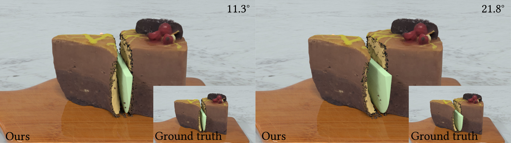
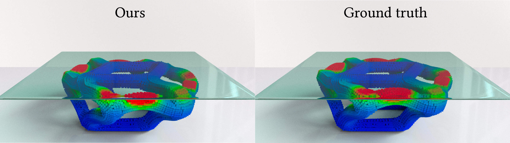
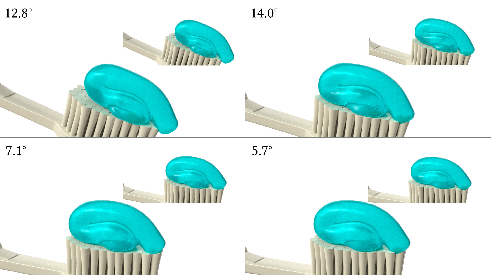

Our reduced-order model accurately simulates the cutting of a chocolate cake at various angles by time-stepping in a latent space of only dimension 𝑟 = 6. The original full-order simulation employs 200, 000 particles. Courtesy of dimension reduction, our approach is 10.2× faster than the full-order simulation.
Neural Stress Fields for Reduced-order Elastoplasticity and
Fracture
Zeshun Zong1,
Xuan Li1,
Minchen Li2,
Maurizio M.
Chiaramonte3,
Wojciech Matusik4,
Eitan Grinspun5, Kevin Carlberg3, Chenfanfu Jiang1, Peter Yichen Chen4
Eitan Grinspun5, Kevin Carlberg3, Chenfanfu Jiang1, Peter Yichen Chen4
1UCLA, 2CMU, 3Meta Reality
Labs Research, 4MIT CSAIL, 5University of Toronto
SIGGRAPH Asia,
2023

Paper
Abstract
We propose a hybrid neural network and physics framework for reduced-order modeling of elastoplasticity and fracture. State-of-the-art scientific computing models like the Material Point Method (MPM) faithfully simulate large-deformation elastoplasticity and fracture mechanics. However, their long runtime and large memory consumption render them unsuitable for applications constrained by computation time and memory usage, e.g., virtual reality. To overcome these barriers, we propose a reduced-order framework. Our key innovation is training a low-dimensional manifold for the Kirchhoff stress field via an implicit neural representation. This low-dimensional neural stress field (NSF) enables efficient evaluations of stress values and, correspondingly, internal forces at arbitrary spatial locations. In addition, we also train neural deformation and affine fields to build low-dimensional manifolds for the deformation and affine momentum fields. These neural stress, deformation, and affine fields share the same low-dimensional latent space, which uniquely embeds the high-dimensional simulation state. After training, we run new simulations by evolving in this single latent space, which drastically reduces the computation time and memory consumption. Our general continuum-mechanics-based reduced-order framework is applicable to any phenomena governed by the elastodynamics equation. To showcase the versatility of our framework, we simulate a wide range of material behaviors, including elastica, sand, metal, non-Newtonian fluids, fracture, contact, and collision. We demonstrate dimension reduction by up to 100,000x and time savings by up to 10x.
Video
Source Code
BibTex
@article{zong2023neural,
author = {Zong, Zeshun and Li, Xuan and Li, Minchen and Chiaramonte,
Maurizio M and Matusik, Wojciech and Grinspun, Eitan and Carlberg, Kevin and Jiang, Chenfanfu and
Chen, Peter Yichen},
title = {Neural Stress Fields for Reduced-order Elastoplasticity and
Fracture},
journal = {arXiv preprint arXiv:2310.17790},
year = {2023},
}
Supplemental Documents
Results

Tear a piece of bread: Our method accurately captures the tearing behavior at different elastic moduli. Due to a lack of accurate stress representation and the inaccurate deformation gradients computed from neural fields, the baseline approach by [Chen et al. 2023a] fails to capture the fracturing behavior.

Sand plasticity: Our method can capture complex elastoplasticy such as sand plasiticity. Here the problem parameter is the friction angle. We can interpolate to unseen friction angles.

Metal plasticity: Unlike end-to-end ML frameworks that can only predict particle positions, our first-principal-based reduced-order approach also matches stress quantitatively.

Vissoplasticity: A ribbon of toothpaste is smeared onto a tooth- brush held at different angles. The four subplots show our deployment results with 50 sample points. The corresponding ground truth is shown in the top right corner of each subplot.